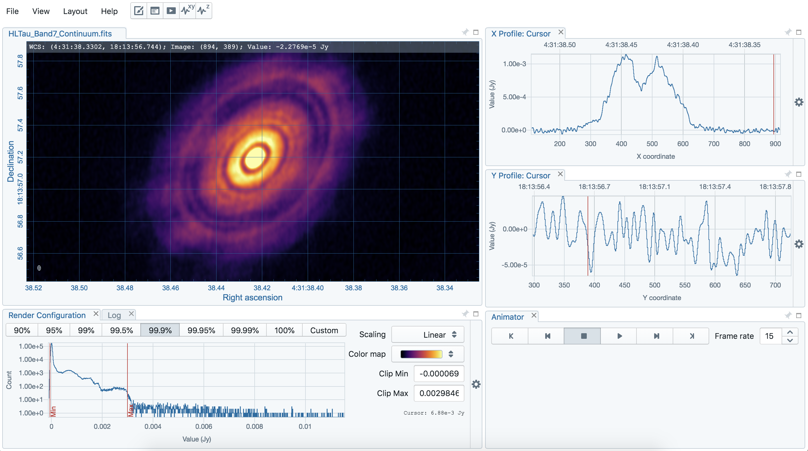

CARTA
Cube Analysis and Rendering Tool for Astronomy
The CARTA team
CARTA is developed by
Academia Sinica Institute of Astronomy and Astrophysics (ASIAA)
Inter-University Institute for Data Intensive Astronomy (IDIA)
National Radio Astronomy Observatory (NRAO)
Department of Physics, University of Alberta
CARTA
CARTA is the Cube Analysis and Rendering Tool for Astronomy, a new image visualization and analysis tool designed for the ALMA, the VLA, and the SKA pathfinders. As the image size increases drastically with modern telescopes in recent years, viewing a image with a local image viewer or with a remote image viewer via the ssh protocol becomes less efficient. The mission of CARTA is to provide usability and scalability for the future by utilizing modern web technologies and computing parallelization. Download and Installation
CARTA utilizes a discrete or integrated GPU for image rendering. Therefore, the CARTA Desktop 'local' version is intended for use on a laptop or desktop computer directly connected to a monitor.
We also provide a 'remote' version for users who wish to run CARTA from a remote RedHat6/CentOS6 or RedHat7/CentOS7 server via the ssh protocol. The majority of servers do not have onboard GPUs. The remote version runs CARTA 'backend' on the server, and the CARTA 'frontend' is accessed through your web browser of choice that is running on your local machine. This allows your local machine's GPU to perform the image rendering, while the remote server handles the storage and CPU/RAM instensive tasks.
Mac Installation Instructions: Open the dmg file and drag the CARTA-v1.0.app to the /Applications folder.
To run CARTA-v1.0, click on it in the Launchpad, or double click on it in the Finder.
Alternatively, the user may run CARTA from the terminal by adding an alias to their ~/.bashrc file.
e.g. alias carta=/Applications/CARTA-v1.0.app/Contents/MacOS/CARTA-v1.0 and source ~/.bashrc.
Now CARTA can be started by typing carta in the terminal.
Linux Installation Instructions (local version): The RedHat7 and Ubuntu versions are provided as AppImages. After downloading, make the AppImage file executable e.g. chmod 755 CARTA-v1.0-ubuntu.AppImage and run it ./CARTA-v1.0-ubuntu.AppImage
Linux Installation Instructions (remote version):
On your remote server, extract the archive tar -xvf CARTA-v1.0-RedHat6-headless.tar.gz
and run the carta script within ./CARTA-v1.0-RedHat6-headless/carta. This will provide a unique URL.
Copy and paste this URL in to your local web browser to access CARTA.
When finished, close your browser window, and press 'q' in the terminal window to close CARTA.
The default search path for images is $HOME, but you may override this by appending a path to a directory of your choice
e.g../CARTA-v1.0-RedHat6-headless/carta /path/to/my/images .
User manual and Getting help
The user manual is available at here.
Should there be any problem, please contact us.
Acknowledgement
ASIAA CASA Development Center (ACDC) acknowledges the grant from the Ministry of Science and Technology of Taiwan for the ALMA-NA collaboration.
The Inter-University Institute for Data Intensive Astronomy is a partnership of three South African universities: the University of Cape Town, the University of the Western Cape and the University of Pretoria.
The National Radio Astronomy Observatory is a facility of the National Science Foundation operated under cooperative agreement by Associated Universities, Inc.
CARTA is mainly built in C++, TypeScript, and JavaScript, and with the following third-party libraries:
- AST: http://starlink.eao.hawaii.edu/starlink/AST
- Blueprint: https://blueprintjs.com
- casacore: https://casacore.github.io
- Chart.js: https://www.chartjs.org
- Electron: https://electronjs.org
- GoldenLayout: https://golden-layout.com
- MobX: https://mobx.js.org
- React: https://reactjs.org
- TBB: https://www.threadingbuildingblocks.org
Copyright and License
Copyright (C) 2018-2019 ASIAA, IDIA, and NRAO. This program is free software; you can redistribute it and/or modify it under the terms of the GNU General Public License version 3 as published by the Free Software Foundation.
This webpage is hosted on GitHub Pages — Theme by orderedlist